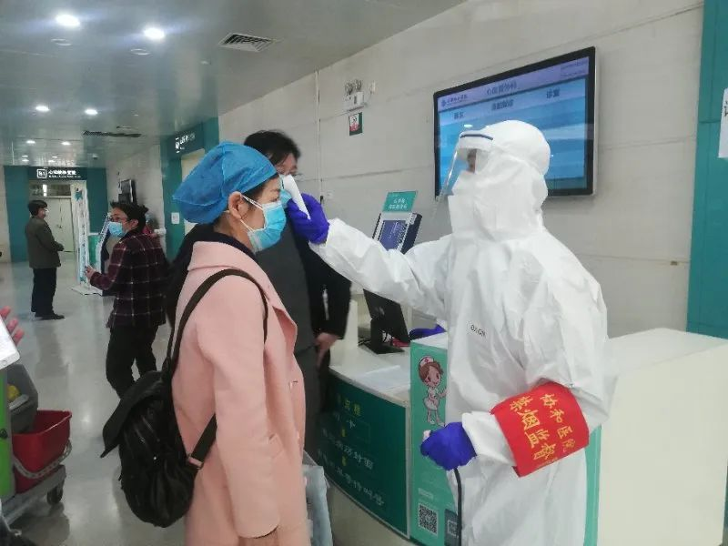

在人间丨一个深圳医生的“抗疫”日记：父母至今不知我在一线
原文链接 备份链接 凤凰新闻客户端 凤凰网在人间工作室出品 打开凤凰新闻客户端，搜索「在人间」并关注 我是深圳市第三人民医院肝病科的一名医生。春运期间，成千上万的武汉人涌入深圳。随着武汉疫情爆发，深圳也成了新冠病毒的“重灾区”。 1月22 …

“湖北和武汉医疗救治、社区防控和后续工作任务依然艰巨繁重，其他地区人员流动和聚集增加带来疫情反弹风险依然存在。”唯有继续加大防控和排查力度，才有可能避免新冠肺炎疫情再次局部暴发

3月18日，武汉协和医院心外科候诊区，医护人员正在为等待就诊者测量体温。《财经》记者信娜/摄影
文 |《财经》特派武汉记者 信娜 实习记者 朱贺
编辑 | 王小
2020年3月19日开门就是好消息：截至18日24时，湖北、武汉新增确诊病例0例；武汉的新增疑似病例、现有疑似病例也皆为零。
此前连续五天，武汉原本已归零的新增确诊病例一度冒头。3月13至3月17日，武汉共新增14例确诊患者，其中6例来自门诊。来自门诊的病例，虽然绝对数字不大，但仍被专家视为必须严加防控的危险信号。
3月18日，武汉市卫健委通报了唯一一个确诊病例，也是来自门诊。这引起了医学专家和各级机构的高度重视。
3月18日，中共中央总书记习近平在中央政治局常委会重要讲话中强调：在充分肯定我国疫情防控工作成绩的同时，要清醒看到国内外疫情形势的复杂性和严峻性。湖北和武汉医疗救治、社区防控和后续工作任务依然艰巨繁重，其他地区人员流动和聚集增加带来疫情反弹风险依然存在。
根据武汉市卫健委的通报，3月18日的新增确诊患者曾在2月24日晚5点，出门去江汉区姑嫂树菜场值夜班一次。2月25日早上回到家中，无人员接触。这名患者的感染来源可能为菜市场内暴露或市场人员接触感染所致。姑嫂树菜市场距离华南海鲜市场步行不到3公里。
《财经》记者了解到，武汉有43家医院已陆续开放普通门诊，普通门诊检测皆开始正常收费。近日，有外地人陆续来武汉的三甲医院就诊，从概率上看，这也加大了多方感染的潜在风险。
据医学专家分析，在门诊中发现病例的危险在于，这些新增确诊患者有可能是全市大筛查中被漏掉的传染源，这增加了疫情死灰复燃的可能性。
不过，浙江大学公共卫生学院教授陈坤对《财经》记者分析，散发的社区新冠肺炎患者的出现也是传染病流行过程中的“正常”形态。重要的是做好流行病学调查，早发现、早隔离，并通过现在行之有效的检疫、防疫措施，疫点就会得到扑杀。
外出复工可能会增加感染风险
5 天内新增14个确诊病例，其中6例来自门诊。这对每日关注武汉新冠肺炎病例数据的王木（化名），可不算好消息。这是她在武汉的第53天，“禁足”社区的第30天。她的疑问是，这些门诊确诊病人到底由何而来？

武汉一处隔离观察点，每天三次全面消毒。《财经》记者 王小/摄影
武汉卫健委3月18日的通报显示，2020年3月17日0-24时，武汉市新增确诊病例1例，来自门诊。门诊患者住江汉区汉兴街金色雅园，为姑嫂树菜市场管理人员。
《财经》记者获得的一份告知书，详细记录了该名患者的情况，该份告知书来自其所在社区居委会。
3月15日晚，该患者咳嗽伴有胸闷，无发热，经联系约定于3月16日早上由社区工作人员陪同前往武汉中西医结合医院（又称新华医院）就医，当日检查结果未见新冠肺炎特征，核酸检测结果未出。医院放行，之后，该名患者一直未出家门。
3月17日晚，社区收到上级口头反馈结果该患者核酸检测阳性，后连夜将该患者接出小区就诊，现于市中心医院住院治疗。2名家属已送至密切接触者的隔离酒店。目前，上述家属身体状态良好，无发热，无胸闷气促等症状。
流行病学调查显示，该名确诊患者体温一直无发热症状，仅轻微咳嗽。2月和3月曾各有一次去金雅三期东门取朋友送来的生活物资。其妻子曾三次取生活物资，未与他人直接接触。
2月24日晚5点，该名确诊患者出门去姑嫂树菜场值夜班一次，2月25日早上回到家中，无人员接触。
3月18日，上述武汉市卫健委通报中描述，推断感染来源为菜市场暴露或市场人员接触感染所致。
另一名有过外出工作经历的新增患者确诊于3月15日。据武汉卫健委通报，该名患者住武昌区百瑞景2期，曾有过在小区活动、外出上班和医院就医经历。
其所在社区一名工作人员在3月18日对《财经》介绍，前两天，该名住户开始复工。其所在单位为职工做体检排查，后在武汉天佑医院做了核酸检测，结果为阳性。确诊后，患者已在第一时间被送入光谷地区一家定点医院隔离治疗。
目前，其所住楼层已消杀完毕，同住在家里的密切接触者均已进入隔离点进行医学观察。“除了他以外，家里还有一个人是街道的工作人员，两个人每天外出上班”，上述工作人员说，很难查出来到底是从哪里感染的。
“不排除社区或家庭成员感染可能。”武汉卫健委通报这样解释该名患者的可能感染原因。
门诊核酸检测等均需自费
“我们都不知道是怎么回事”，在得知这几日新增确诊病例来自门诊后，武汉协和医院一名医务人员称，有压力。武汉协和医院在第一批开放医院名单中。本周开始，其本部院区许久未开的门诊大门重新打开。
3月中旬开始，武汉市部分医院陆续恢复普通门诊，并开放病区，收治非新冠肺炎患者。每日非新冠定点医院名单、各医院门诊、急诊和住院科室开放情况可在武汉市卫健委官网查询。
截至3月17日12:00，35家仅收治非新冠病人与8家新冠、非新冠病人均收治的非新冠定点医疗机构，这43家恢复了部分门诊和住院科室。
3月18日下午3点，武汉协和医院二楼心外科候诊区，《财经》记者遇到一名年轻女子，头戴彩色帽子，怀里紧紧抱着出生21天的孩子。他们从武汉周边某县城自驾赶来。他们此时能进入武汉并不容易，需要准备多份材料：县城医院开具的转诊单，健康证等。
这位女子告诉《财经》记者，孩子出生不久便出现缺氧症状，县城医院条件有限，没法确诊，“这两天症状越来越严重，哭的时候特别明显，喘不上来气”。此前他们通过在线问诊向协和心外科医生咨询，初步结果是“先天性心脏病”。
得知武汉协和医院开诊，他们便第一时间赶来。“如果不是孩子生病，我们也不会冒着风险进入武汉”，这位母亲说，孩子还小，希望能尽快治疗。
他们面对的是全副武装的医护人员，防护服、眼睛、面罩、口罩，与发热门诊内的医生几无两样。只要两三个人围上来，他们便大张手臂，“退后、退后，不要围上来”。这与门诊楼内无处不在的“请与他人保持距离，至少1米以上”的通知相呼应。
《财经》记者看到，医院做了详细记录，每一个病人都被完整登记了姓名、年龄、就诊卡信息。就诊卡需先在窗口绑定家庭住址和电话号码。
填完上述信息，体温枪就伸过来对着额头检测。如果体温超过37.3℃，体温枪会自动报警。导诊台内一位工作人员介绍，发热病人会立马隔离处理，并送至发热定点医院。在测量体温外，工作人员还会用脉搏血氧饱和度仪检测就诊者的血氧饱和度。就诊者还需回答，是否曾与确诊新冠肺炎患者有过接触。
如果收治入院，需先做检测排查，排除新冠肺炎后，才能办理住院。上述医务人员介绍，不仅要做CT、两次核酸检测，还要做血清抗体检测。
《财经》记者了解到，上述检测项目均需自费，其中核酸检测300元，血清抗体100多元。
武汉大部分医院将注意力转向到开放的普通门诊和病区。一位三甲医院副院长称，近期的主要精力投放在门诊，情况已经明显好转。
仍需警惕复工风险
武汉近日新增来自门诊的部分确诊患者，提示有的社区还有新冠肺炎患者。不过，首都医科大学公共卫生学院副院长郭秀花认为，个别的确诊病例是小概率事件。大趋势是疫情得到控制，可以开展正常的经济活动了。
此前，北京大学公共卫生学院教授宁毅接受《财经》记者采访时也提到，整个趋势是快速递减的，永远也不能排除局部暴发的可能，需要警戒点点星火。控制不好的话，就是一把大火。有警戒心，点点星火会越来越少。
与外出工作相关的新增确诊病例，是否会使疫情在某些地区卷土重来？
浙江大学公共卫生学院教授陈坤认为，传染病的防控措施要因时因事因地制宜，并根据形势的变化适时调整策略与措施，现在正在进行的分类分区域分时间段有序复工复学也是这个道理。
3月18日，湖北省人民政府副省长曹广晶在疫情防控工作发布会上介绍，武汉市第一类企业可以继续复工复产，其他企业按照不早于3月20日24时前复工复产进行安排。根据政府部门的解释，第一类企业，是指涉及保障疫情防控、群众生活必需等企业。
复旦大学公共卫生学院教授胡善联提示，复工单位需要全权负责，从组织上要特别重视。从技术措施上来说，可以慢慢放开，对员工的上班时间、在食堂就餐的时间进行错位安排，打个时间差，不要在一起聚集。
他还提示，个人也需多注意卫生防护，戴口罩，勤洗手，保持社交距离，通风，不去密集场所等。
至于整个武汉何时能够解封，恢复正常工作和生活秩序，此前中国工程院院士李兰娟在接受媒体时提到，到3月20日左右武汉新增确诊人数有望清零。清零之后仍要进行两周的观察，如果不再有新增确诊患者，武汉的“封城”问题可解决，恢复正常工作和生产生活。
按上述预计，武汉有望于4月上旬考虑解决“封城”问题。但截止目前，湖北和武汉当地尚未有权威机构正面谈及全城解封的具体时间表。
【版权声明】本作品著作权归《财经》独家所有，授权深圳市腾讯计算机系统有限公司独家享有信息网络传播权，任何第三方未经授权，不得转载。

▲点击图片查看更多疫情报道
责编 | 蒋丽 lijiang@caijing.com.cn
本文为《财经》杂志原创文章，未经授权不得转载或建立镜像。如需转载，请在文末留言申请并获取授权。
原文链接 备份链接 凤凰新闻客户端 凤凰网在人间工作室出品 打开凤凰新闻客户端，搜索「在人间」并关注 我是深圳市第三人民医院肝病科的一名医生。春运期间，成千上万的武汉人涌入深圳。随着武汉疫情爆发，深圳也成了新冠病毒的“重灾区”。 1月22 …
原文链接 备份链接 医院呼吁，并不危急的其他疾病患者，可以通过线上咨询、问诊，暂缓前往医院；但该看的病还是要去医院看，千万不要耽误治疗。 记者 | 周 洁 新冠肺炎疫情期间，其他疾病的病人怎么看病？记者连线上海各大医院发现，恢复门诊近一个 …
原文链接 备份链接 24.02.2020本文字数：4461，阅读时长大约7.5分钟 导读：2月19日，也是应勇、王忠林履新一周的日子。这一天，微博平台上有关新冠肺炎患者的求助信息清零了。 作者 | 第一财经 胥会云 北京小汤山医院启用后 …
原文链接 备份链接 从线下到线上，从疫情时期到常规医疗，天津“微医模式”或将成为各地参考借鉴的范例。 全文5588字，阅读约需11分钟 从大年初一开始，天津医院感染免疫科副主任刘秀婵有了两个新身份。 穿上防护服戴上口罩，她是支援天津医院 …
原文链接 备份链接 跳广场舞、练瑜伽、打太极、复习备考……每天我们都能从社交媒体上了解到武汉“方舱医院”内患者们的日常生活。这些看似平常的活动，却为紧张的抗疫工作带来了一丝活力与鼓舞。 2月3日晚，武汉市宣布将在武汉国际会展中心、洪山体育 …